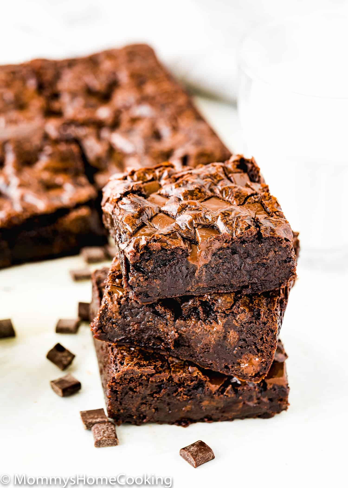

Choclate Brownie

Description
A Brownie is one of those sweet dishes that has nothing hidden about it – from the name to its flavors and texture. I mean what can be more obvious than calling a dish by the name of what its color is.
Also, as the chocolate is one of the main ingredients, it is also commonly termed as Chocolate Brownie or Cocoa Brownie.
Ingredients
- Cocoa Powder
- Butter
- Flour
- Yogurt
- Suger
Instructions
- o a bowl, add 3/4 cup all purpose flour (98 grams), 1/3 cup + 1 tablespoon cocoa powder (42 grams) and 1/4 teaspoon baking powder. If you are using unsalted butter, you should add 1/4 teaspoon of salt here as well. I am using salted butter so I skipped the salt.
- Use a wire whisk,mix until it is all well combined and set it aside.
- Take a large bowl and add 1/2 cup plain whole milk yogurt.Make sure the yogurt is at room temperatue.To that now add 1 cup suger.
- Using a wire whisk, mix until the sugar dissolves completely, this takes around 2 to 3 minutes of stirring. The sugar needs to dissolve well and it’s for this reason we use caster sugar since it is the finer sugar and easier to dissolve and mix.
- Then add 1 & 1/2 teaspoon of vanilla extract and mix until it is all well combined. Now, set this aside.
- Dice 6 tablespoons of butter (85 grams) into small pieces and place them into a bowl. Place this bowl over a pot of simmering water. The bottom of the bowl should not touch the surface of water, this is called the double boiler method. You can also use the microwave to melt the butter.
- Bake in the preheated oven for 25-30 minutes, or until a toothpick inserted into the center comes out with a few moist crumbs. Avoid overbaking to keep the brownies fudgy.